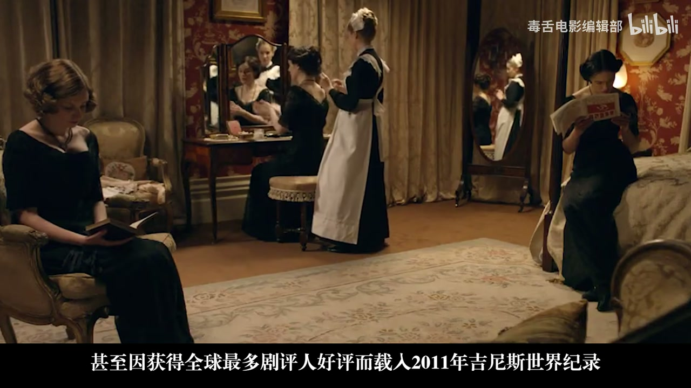
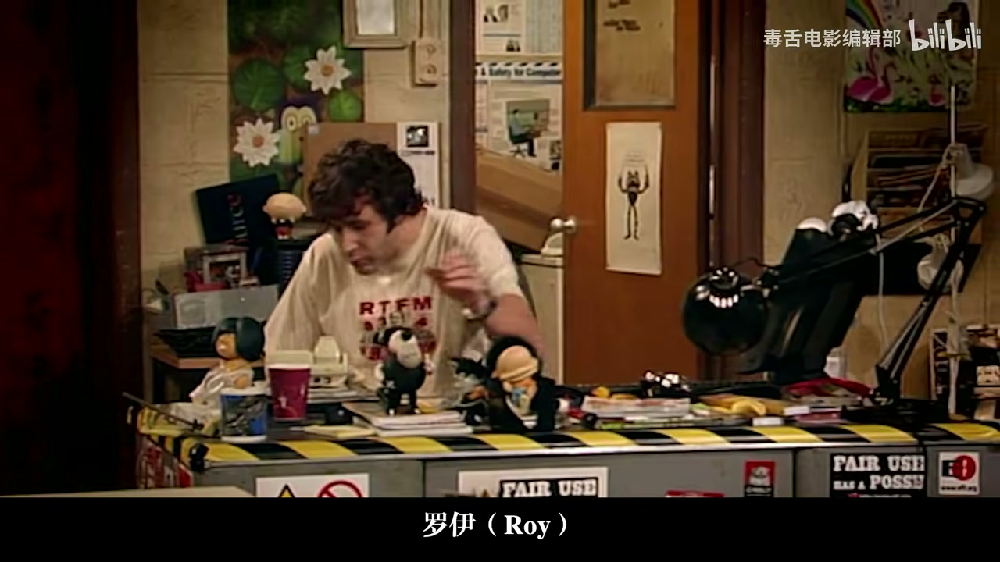
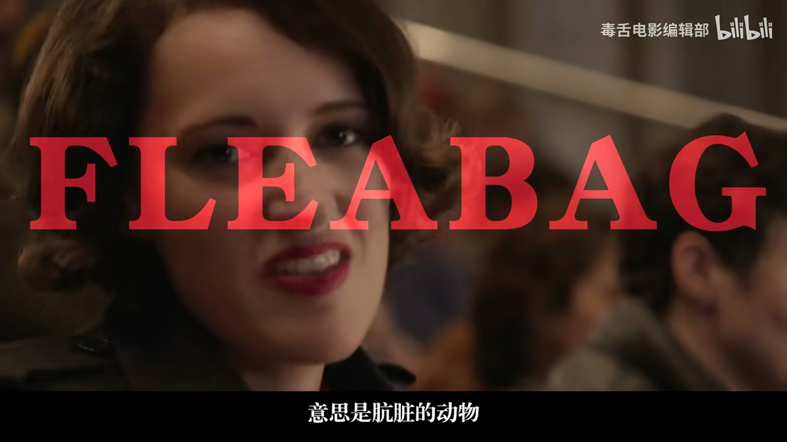
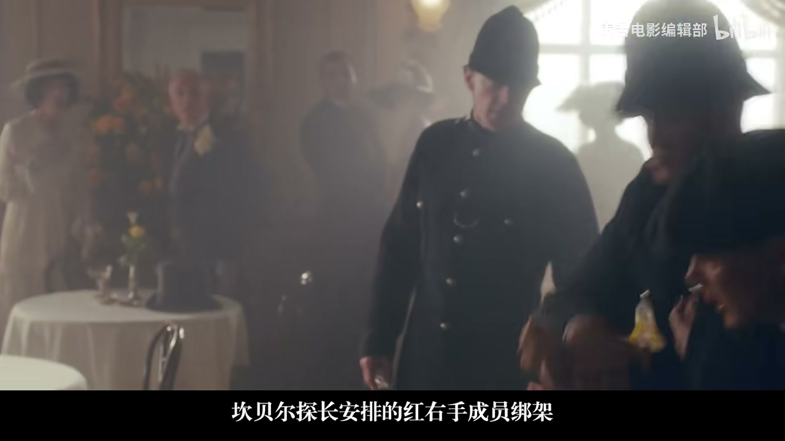
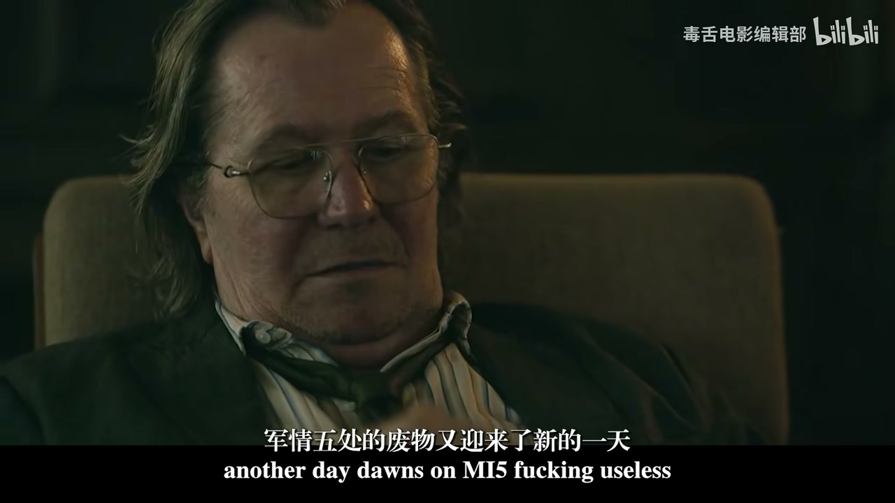
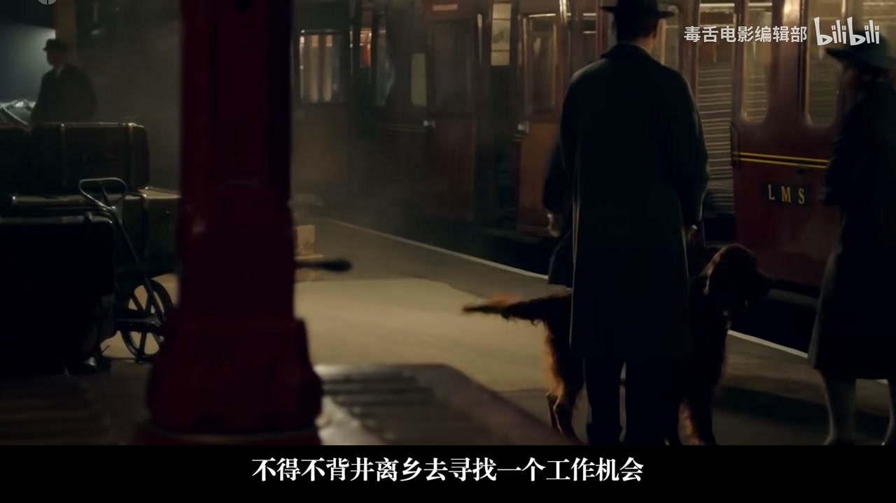

内容要点
毒舌电影盘点新世纪英剧审美：短季、不注水、拒绝廉价爽结局。片单含《神探夏洛克》《唐顿庄园》《IT狂人》《真相捕捉》《Fleabag》《浴血黑帮》《慢马》《九号秘事》、黑镜式「分数社会」篇章，以及《万物生灵》。每部抓关键场景与主题（推理软肋、体面告别、后真相监控、打破第四堵墙、间谍倒霉蛋、单元剧诡计、评分暴政、乡间善意）。口播繁体 ASR 已转简。
知识结构
英剧短纯；夏洛克智性与情谊；唐顿体面考据与告别。
IT狂人少数派；真相捕捉改写监控；Fleabag 告解与羞耻。
浴血黑帮伤痕；慢马倒霉特工；九号秘事永不信任表象。
分数社会虚伪；万物生灵平凡善意收束。
英剧养的是「嫌弃廉价反转」的胃口；榜单价值在类型覆盖——从智性犯罪到后真相、从打破第四堵墙到乡间温情，漏掉一半往往是漏掉喜剧/单元/间谍冷门。
00:00-07:00为何英剧在鄙视链顶端 + 夏洛克 / 唐顿
开场：英剧够短够纯粹，三五集一季逼编剧删水；主角千疮百孔，不熬鸡汤、不强推大团圆，黑屏留你怀疑人生——审美被养刁后看大热剧会对「快节奏反转」产生错觉。
《神探夏洛克》：现代福尔摩斯与华生软肋；天台对莫里亚蒂的死局；思维宫殿视觉化；男性情谊递进。《唐顿庄园》：六季稳定、大奖与考据偏执；体面为盔甲，面对旧世界崩解；老夫人毒舌金句背后是眷恋。

07:00-18:00IT狂人、真相捕捉、Fleabag
《IT狂人》：职场外壳下的地下怪人王国，喜剧属于不守规矩的少数派。《真相捕捉》：音频延迟 bug 翻案又再抓；监控可被重写，对抗的是「握笔改史」的傲慢——映射后真相与 AI 换脸日常化。
《Fleabag》：两季短集横扫大奖；打破第四堵墙；忏悔室告解暴露「错了」的恐惧；从嫌弃渣女到看见深夜焦虑的自己。


18:00-36:42浴血黑帮、慢马、九号秘事、分数社会、万物生灵
《浴血黑帮》：汤米与命运/PTSD，一战一代伤痕文学。《慢马》（Slow Horses）：倒霉特工部门；尽职换来不被承认的牺牲；摔得最惨才懂肮脏玩法。《九号秘事》：空间+数字九；永远别信看到的；粉丝胁迫编剧的戏中戏。
黑镜式分数社会：评分定阶层、提分表演、崩溃辱骂才获共鸣。《万物生灵》：乡间兽医传记改编；平凡善意与停下的可能——伟大藏在日常微不足道的坚持里。



完整转录（1047段）
以下文本由 Whisper medium 模型自动转录，可能存在少量识别误差，已尽可能修正。
为什么英剧总能稳居巨迷鄙视链的顶端
因为它够短也够纯粹
拒绝收视率绑架绝不注水
往往三五集就是一季
这种体谅强制编剧剔除所有的荣誉
每一秒镜头和每一句台词都有其存在的意义
在这里主角往往千疮百孔甚至神经质
过程不熬鸡汤不迷恋情绪喧息式的爽
结局也没有强推善恶有报或者大团圆
讲完直接黑屏留你在原地怀疑人生
看习惯了英剧之后再去看很多大热剧
你会有这种错觉
明明节奏很快反转不断
却怎么都看不进去了
其实不是剧变差了
而是你的审美被养凋了
毒蛇电影新世纪十大英剧
标准只有一个在最短的时间内
为保你挑剔的审美
神探夏洛克他让全世界看见
智慧是新的性感
你是否曾觉得周遭的一切都变得迟钝
乏味可以预测
就像一部侦探剧早已固化成了一套冰冷的攻势
一桩离奇命案几条故弄玄虚的线索
最后再揪出一两个为了反转反转的凶手
直到2010年神探夏洛克横空出世
他用一场憨畅淋淋的智利轰炸告诉你
不你猜不到
这是一个活在21世纪的福尔摩斯
不用咽斗不拿放大镜
但一条短信就能看穿你的人生
这也是一个被无聊逼得快要发疯的天才
罪案是拯救他于庸长世界的唯一解药
然而当他遇到从阿富汗战场归来的军医约翰·华生
这个冰冷的计算器开始出现bug
他开始有了软肋
转折在第二季最后一集
夏洛克与他的镜像犯罪顾问莫里亚蒂的终极对决
天台上莫里亚蒂给出最后通牒
你夏洛克必须从这里跳下去自杀谢罪
否则我安排好的狙击手会杀掉你生命中最重要的人
夏洛克的大脑飞速运转
表面冷静内心早已紧绷到极致
他在寻找那个唯一的变量
他逼近莫里亚蒂眼里闪烁出过去推理出正确答案时的自信
他以为自己赢了
但莫里亚蒂的目的从来不是赢
你已经离开了
祝你运气好
枪声响起莫里亚蒂引弹自尽
那一刻夏洛克脸上的表情从自信掌握瞬间崩塌为彻底的惊愕
他被逼入一个无法用智力只能用生命去解的死局
绝境下夏洛克拿起电话打给楼下的华生
声音颤抖、脆弱、流露出前所未有的真情
甚至带著歉意
提起神探夏洛克
很多人第一个想到的就是那个超酷的思维宫殿
满屏炸裂的文字、地图和数据流
将抽象的推理转化成一场视觉盛宴
就像直接钻进天才的大脑
第一视角体验超载的快感
但特效的经验只是表面
他真正颠覆的是他对男性情意的极致呈现
夏洛克不再是完美的绅士侦探
而被刻画成高智商的社交怪胎
华生也从一个忠诚的跟班被赋予了坚实的前世和独立人格
从室友到挚友
人物性格和关系一路递进、升华
最终演变成我嫌弃你
但也只有你的依赖
他的成功做实了俯博的实力
也对经典如何唤发新生做出了最好的回答
不要膜拜,要想象,要创新
唐顿庄园
在一个行将终结的时代
体面是你最后的盔甲
如果要选一部能够代表英俱工艺巅峰的作品
答案只能是唐顿庄园
在这个AI生成一切的时代
它是如此的不合时宜
没有算法推荐的爽点
没有三分钟一反转的快节奏
没有为了话题而设置的极端人设
但整整六季,季季稳定
最终包揽了15座艾美奖和3座金球奖
甚至因获得了全球最多剧评人好评
而载入了2011年吉尼斯世界纪录
这样厚重的年代剧不会再有了
故事的诞生
源于编剧朱利安·费罗斯
失去时代的迷恋
为电影高斯福庄园撰写剧本时
他便萌生了创作一部真正属于英国的
展现一战前后英国社会变革
如贵族衰落
阶级关系变化的作品
在当时这是一个巨大的赌注
如果只是为了赚钱
他们不会为了还原一场晚宴
去考究每一道菜的上菜顺序
精确到哪道菜该配哪种银制刀叉
如果只是为了收视
他们不会为了一句台词
去咨询历史学家
1912年的伯爵绝不会说出
1920年才出现的词汇
这是一种近乎偏执的
对真实的追求
这种追求不仅体现在制作上
本身也是故事的核心
一个关于体面与告别的
宏大影域
马杰·史密斯扮演的老夫人
是整部剧的灵魂
他贡献了无数毒蛇金句
但每一句刻薄背后都是对家族
最深层的爱
和对一个逝去时代的无限眷恋
面对家产可能庞弱
他说的是
在变革的漩涡中
他务实又清醒
好像只要他们还在为一套餐具
一场舞会的细节争论
他们就不用真正去面对
那个正在分崩离析的旧世界
这种对规矩和细节的执著
与剧外创作者
对考究与公益的偏执
形成了完美的护文
正如编剧朱利安·费罗斯所言
我真正感兴趣的是
当人们身处一个不再理解的世界
一个他们所熟知的一切
都在眼前消失的时代
他们如何应对
并找到自己的位置
从这个角度上唐顿庄园的终结
并非一个故事落幕那么简单
那种为了愿意质感而牺牲效率
为了氛围而放慢节奏
为了信念对抗潮流的创作方式
在今天
正变得越来越稀薄
奢侈
令人唏嘘的不只是克劳利家的命运
而是一个还能够诞生唐顿庄园的时代
IT狂人
在一个不正常的世界
格格不入是一最闪亮的勋章
任何一份讨论英国喜剧的榜单
漏掉了IT狂人都是不完整的
他在英剧史上的地位等于武林外传
在年轻人群体中流行方式
和顽梗的属性
又像爱情公寓
当然他百分百纯原创
表面上这是一部职场剧
但又彻底的抛弃了办公室政治
同事关系
以及如何向上爬这些成就的套路
在我们熟悉的由西装
PPT和无聊会议构成的正常世界之外
奇思妙想的
进出了一个地下王国
这里住著三个被现代社会流放的怪人
罗伊
一个毕生之律用最小努力活下去的技术员
接电话能躺著绝不站著
也会在西装隔离的葬礼上
穿著一双能让他跑得更快的运动鞋
只为了在默哀时
第一个溜走
莫斯活在二精致世界的天才
他的面部改色的白杯水
放在电脑主题上争抢WiFi
也能在著火时选择发邮件
报火警
还有珍这个对电脑一窍不通
却靠著一份漂亮的简历混进IT部的女人
是这个地下室与楼上正常世界的连接点
也是一切混乱的催化剂
这三人
他们不理解世界的规则
也不想遵守
只想在自己的角落里永远格格不入
美式情景喜剧
通常有清晰的铺垫加爆点的结构
你可以轻易的把那个笑点
讲给别人听
但IT狂人他的幽默是一种氛围
一般来自某个微不足道的谎言
然后像滚雪球一样
引发一场持续不断
不断层层加码
直至让人在屏幕前脚趾抠地的
社交灾难
请原谅我无法付出这种好笑
你必须亲自去看
我只能剧透的大概只有一点
被无数粉丝分为巅峰的剧场
第二季第一季
The Walk Outing
在中国内地的正式影镜版本中被删除了
这荒诞的一幕
意外触及了IT狂人喜剧魅力的核心
它天生就属于那些
不守规矩的少数派
真相捕捉
AI时代我们还能相信什么
这部影剧捧红了一个
大部分人都没听过的成语
神圈究谬
神表示纠正、规范
千表示过失、过错
它的大概意思就是
纠正过失、改正错误
神经究谬也可以代表著
司法系统的根本目的
发现罪行通过法律和证据
来纠正它,最终实现正义
但在真相捕捉
它的含义恰恰相反
AI时代几乎所有眼见为实的视频
都能被修改
那真相该如何辨别
先来看一个视频
阿富汗交火现场
一个英国士兵肖恩
刚刚击杀了一个以剿械并躺倒的塔利班匪徒
为什么开枪
肖恩的理由是
怀疑匪徒打算引爆口袋里的炸弹装置
但他没法解释
为什么敌人明明都倒下了
他还大声警告
法庭上
这成了控告士兵虐杀俘虏的证据
因为视频里一句给老子往后退
肖恩被判谋杀罪
他不服坚持上诉
六个月后安静重审
反转来了
一位便携摄像机的私生工程师
给出了专业的学术证据
因为该摄像机的音频接收器存在缺陷
会不断的叠加延迟与阻塞
导致录入音频之后越发严重
视频中所听到的声音
应当是五秒之前的
简单说
那一句给老子往后退
其实是他开枪前喊的
一个简单的技术bug
证据当场作废
肖恩无罪释放
但很快释放不到24小时
肖恩又被抓回了警局
一脸懵逼的他
眼前是另一段录像
画面里肖恩与自己的律师汉娜
因为刚刚打赢了官司
正在亲密庆祝
警察默不作声
视频继续播放
匪夷所思的转变
一针一针的写在了肖恩的脸上
这不是发生什么事
这不是发生什么事
这不是发生什么事
这不是发生什么事
这不是发生什么事
这不是发生什么事
这不是发生什么事
这不是发生什么事
从震惊到紧张到愤怒
到底谁在撒谎
负责案件的警官
雷彻和凯里
一开始看著屏幕上肖恩的暴行
斩钉截铁
随后在另一块屏幕
他又看到了截然不同的真相
高潮发生在第一季第五集
男主肖恩踏进了幕后黑手的
核心据点
这里没有审判 没有宣判
没有法官 没有陪审团
只有一排安静的显示器
和一个自称在替他主持公道的男人
他让肖恩看到了原本的监控
他让肖恩看到了原本的监控
但随后 肖恩发现
那个更为世人熟悉的版本
也是出自他们的手
这群人像调适一段代码一样
取出公交车的监控画面
百次重未发生过的争执
一段不曾存在的威胁
通过监控机位
驱逐了肖恩的身体
在他身上
在他身上
在他身上
在他身上
在他身上
而更骇人的是
这帮人费尽心思的栽赃
其实是对政府的神签究妙
发起抗议
一个国家的最高权力
用最尖端的技术
把所谓的极端分子编入数据库
挑合适的时机
创造他们的犯罪证据
而肖恩就是朝圣者们
抵抗这套纠正系统的
最终的机制
而肖恩就是朝圣者们
抵抗这套纠正系统的
一个刚刚成冤得血的士兵
狼荡入狱
居然是监控被动了手脚
政府的攻心力自然崩塌
这一刻
雷特终于明白
他对抗的不是一个罪犯
也不是一个组织
他对抗的
是一种傲慢
一种自以为掌握了上帝之笔
并相信自己有权重写历史的傲慢
今天
我们提起真相捕捉
后真相时代
听著似乎离我们很远
但打开任何一个短视频APP
那些足以以假乱真的AI换取特效
早已从遥远的黑科技
变成了日常的娱乐
这项技术的门槛
其实正在以超乎想像的速度
不断降低
这是真相捕捉真正的恐怖
用最写实的镜头
演出了这个时代
每个人都有可能遭遇的指控
当所有人都真诚
来创造一个完美的世界时
他们最终所创造的
恰恰是一个充满谎言的
美丽新世界
而这个过程
每其名曰神千救命
伦敦生活
一个人要讲多少笑话
才能掩盖一句
我好难过
如果要选出一部
能站在新世纪剧及金字塔间的作品
可能出乎意料
她没有大爆炸
没有连环杀手
没有王室八卦
短短两季12集
每集25分钟
却包揽了艾美奖金球奖
英国电影和电视艺术学院奖
等所有主流电视荣誉
而这个女人连名字都没有
但亲切的像我们身边的朋友
她的绰号FREEDBACK
意思是肮脏的动物
说脏其实都客气了
她配合每个男性的嗜好
甚至睡了最好闺蜜的男朋友
间接害死了她
问题是在有这些男人睡觉的过程中
她有享受到吗
如果有享受她就不会一边爱爱
一边打破第四堵墙
理智的跟观众分析对方的尺寸
能力 爱好
显然她不喜欢性
也对眼前的男人没兴趣
她沉迷的是一种被需要的虚荣性
打破第四堵墙
对著镜头和观众疯狂吐槽
是伦敦生活最大的标签
这个标签是叙事技巧
也是故事核心
一个关于孤独与被看见的绝妙影域
比如面对父亲突然起来的关心
她第一遍说的是
第二次
第三次
第四遍
第二次
第三次
来来去去
其实就是一个意思
好 挺好 都挺好
面子就是这样撑住了
交流也是这样被堵住了
破防发生在第二集第四集
Free Bad
爱上了一个她绝对不甘爱的人
一个被她称为Hot periods的神父
在酒精的催化下
她走进她的教堂 坐在忏悔室的隔板后
但她的告解不是对上帝
而是对她或者说
面对那个早已知离破碎的自己
一开始她还在笑
慢慢地她不再对我们几眉弄眼
不再讲俏皮的话
她颤抖著
用一种近乎耳语的声音
说出了那个她埋藏了最久的
最丑陋的真相
她深吸一口气
我喜欢买票的东西
玩笑的东西
不玩笑的东西
我想要有人告诉我相信的东西
投票的东西
爱的东西
告诉他们
我想要有人告诉我
如何活著我的生命
因为到现在我都觉得我错了
用冷漠和放荡去拒绝世界
是为了避免再次失去
但一方面
拒绝了世界
也彻底囚禁了自己
话说回来我们对free back感受
为什么会那么痛
一开始你觉得她是个渣女
觉得她荒诞可笑
但随著剧情推进
你看著她一个人在夜幕下抽烟
看著她不停地说一切都好
看著她在一次次受伤后
先是呆滞
呆滞后起出一个更勉强的微笑
直至我们透过屏幕
看到了那个在深夜里同样焦虑
的自己
编剧和主演菲比沃勒在提当女主个性时
用到了一个词
逃避
最好的现代剧作就是如此
你以为你在看她的笑话
但最后你发现她演的是
我们的生活
浴血黑帮
你的野心是你对抗创伤的唯一解药
你以为这是一部黑帮史诗
有枪战 有抢劫
有黑帮火病 有一代大亨的
崛起传奇
甚至还有一战迄今的社会动荡
政治阴谋
但我想说她给人印象最深的
其实是极度风格化的视听背后
那一抹极度悲伤的底色
这是一个一战老兵为了对抗战争的
PTSD与命运的不止不休
这句代表性的桥段
发生了第二季结尾
汤米在一个极度危险的行动前
获得了前女友格雷斯的表白
燃起了她想好好活下去的信心
结果 却在任务大功告成时
突然被死对头坎贝尔探长安排的红右手成员绑架
被带到了郊外一个挖好的坟墓前
此时的她
平静地抽完了一支索姆河牌的烟
无奈地重复
但 注意她接下来的话
这是一场让很多人入坑的演出
也是全剧她少见的不甘心
尤其她看向的方向
是天 也是命运
背后硬紧地响起了子弹上膛的声音
她认了命 闭上眼睛
平静地等待死亡的将领
可命运并没有放过我来弄她
因为命运是命运
命运是命运
命运并没有放过我来弄她
枪声响起 死掉的是行刑的人
当她睁开眼
神秘人只带了一句话
可是死里逃生的汤米
却没有半分的狂喜与庆幸
她的脸上是比死亡更深的空虚与茫然
汤米幸存 在荒野里艰难地行走这场戏
事后采访
导演就是想让角色在这一瞬间
回想起自己在一战战场上的狼狈模样
是的 浴血黑帮
就是一个大型的属于汤米那一代人的伤痕文学
就是一个大型的属于汤米那一代人的伤痕文学
逼你站战场 逼你麻木 逼你认命
逼你站战场 逼你麻木 逼你认命
在一次又一次死到零头时又偏偏放过你
然后把厄运一次次报应到你在乎的人身上
然后把厄运一次次报应到你在乎的人身上
当新婚妻子在舞会上被众目睽睽地枪杀时
当新婚妻子在舞会上被众目睽睽地枪杀时
汤米彻底明白 在命运面前
他从来都是个笑话
因此他的余生 都在给这个世界树终止
因此他的余生 都在给这个世界树终止
主创们早就在采访中说过创作的逻辑
汤米必须始终回到那个
满身伤痕 破碎的处境里
汤米必须始终回到那个满身伤痕 破碎的处境里
汤米必须始终回到那个满身伤痕 破碎的处境里
汤米必须始终回到那个满身伤痕 破碎的处境里
很多人都记得
浴血黑帮是一场极致的暴力美学盛宴
英文复古 酷炫的爽文风格
还有任人圣上县技术飙升的配乐
但这类极具风格化的视听
承载的也是一战期间一代年轻人
对这个世界共同的奋满
这部剧的本质是那句
汤米反复念叨的台词
很多人不理解
但那是一个早该死掉的人
用余生向命运发起冲锋
直到尽头不止不休的男男异女
尤其是军事军事军事军事军人
这种死亡的感觉
留人
意识到这是一份狗屁工作
是你想象这里的第一步
大多数人对间谍片主角的认知
早已模式化
要么是香车美女
灯红酒绿
要么不断玩最后一秒营救
给全世界再当英雄
但有谁想过
间谍里那些在关键时刻掉链子
丢失目标
导致任务失败的倒霉蛋
他们的生活会怎样
我被这座建筑的混蛋围绕了
但你却是金属的
留人
讲的就是一个关于倒霉蛋们的故事
平平无奇的街角中餐厅二楼
阴暗逼浙
装修破摆
楼梯支压坐享
马桶时好时坏
全天候散发的陈腐的味道
在军情五处
四楼部门不只是一个地理位置
更是一种职业处境
来到这里的
是一群没有未来
只配在毫无意义的工作中
慢慢腐烂的垃圾
他们有在模拟演习中
搞出天大乱子的前希望之星
有把绝密文件
忘在火车上的糊涂蛋
也有因赌博和毒品
而身败名裂的老油条
更不用提他们的上司
杰克逊·兰姆
一个衣裳邋遢
汛酒成性
毫无风度和优雅
永远在打嗝和放屁
自如切换的中年老邓
他最喜欢用刻薄的言语羞辱下属
致力于让他们彻底放弃
对这份职业的任何追求
但
就是这样一个设定
从2022年第一季诞生起
牢牢正聚的本世纪叠战类巨集的头把交椅
因为
他把过去高大上的叠战片
降维到了大众都能接受的
上班 打卡 办公室政治
最有讽刺性的片段
出现在第二季
私劳部门特工明·哈伯的死
一个普普通通的日常安保交接
哈伯偶然发现了街头人的疑点
于是
主动进行跟踪调查
为此
他不惜骑单车
追了对方小半个伦敦
最后
果然确认了街头人的身份嫌疑
可他的这种尽职尽责
换来的
是自己被卷入案件
悲惨被杀
更可惜的是
因为哈伯是私劳部门
调查未获批准
上级已拒绝承认他的劣势资格
不能把名字写进荣誉名录
这样一个冷冰冰的黑色现实结尾
私劳部门的老大兰姆
是怎么解决的
他无事上市的拒绝
悄悄贿赂看守
带着整个部门
去圣伦纳教堂为哈伯送行
并强行把他的名牌
钉在了荣誉榜上
真的还是假的
无所谓
重要的是
这种对于价值感的认可和尊重
这一刻
或许
就能让我们理解留人的吸引力
他再用继承牛马们的视角
重写纯正的谍账故事
狗爹视演的兰姆
从一个冷战情报王牌
退化成一个在私劳部门
混吃等死的老逼灯的过程
就是对传统谍账类型的逆反
反的
是过去几十年商业电影
用一层层美化修饰的光鲜和传奇
但去美后留下的
是真实的残酷
黑色
讽刺
还有一种少见的人情味
一群各有缺陷的废物
在老母鸡兰姆的羽翼下
在新时期的情报斗争中
跌跌撞撞
互相嫌弃
若在关键时刻出人意料
上线光芒
这或许
就是留人成为本世纪最佳
叠战的特质
在某些地方
失败不是终点
而是一种资格
因为
只有那些摔得最惨的人
才最懂得这个世界
真实的
肮脏的玩法
意识到一切都是狗屁
才是享受这里的开始
9号密室
好了
游戏开始
规则只有一个
永远不要相信你看到的
一栋公寓
一个更衣室
一节卧铺车厢
甚至是一个鞋柜
每隔半小时
一场全新的戏剧在这里上演
唯一的共同点
就是这个空间
永远和数字久有关
9号密室
英国舞台戏剧传统
在本世纪最优秀的继承者
它可以是让你毛骨悚然的
恐怖桥段
也可以是让你笑出腹肌的
黑色喜剧
也可以是让你心碎的
温情小品
但无论它披着何种外衣
你都必须记住
编剧李斯希尔·史密斯
和史蒂夫·佩姆·伯顿
就是两个
本世纪天才的恶作剧之神
他们唯一的乐趣
就是在你完全放松
警惕的最后一分钟
微笑着将你脚下的地毯
猛的抽走
这个系列有反转
有演技
甚至有时
不仅能打破第四面墙
还敢暗戳戳的捅观众的肺管子
比如第六季第二集的希蒙说
就是其中的佼佼者
结尾
当编剧麦奎尔被问到
想跟观众说什么的时候
他笑着看向了镜头
把剧中角色杀人的责任
直白的扔给了
屏幕前每一个观众
不可谓不大胆
可观众却毫不在乎
因为这个故事
讲的是一个看不起粉丝的傲慢编剧
与喜爱他作品的狂热粉丝
之间的相爱相杀
故事里
两个粉丝为了能让编剧
按照他们的意愿
修改作品的结局
玩了一出仙人跳
让编剧以为被抓住了把柄
不得不接受粉丝的要挟
按粉丝的话
说啥做啥
就像英国的儿童游戏
希蒙说
可最后粉丝的要求太多
蹬鼻子上脸
编剧惹无可忍
痛下杀手
摆脱威胁
可这样一个故事
结尾的出人意料
倒还是其次
因为这是一个从设定到文本
都把细节抠到了极致的形式创作
比如台词里很多对白
你以为在讨论创作者和粉丝的关系
但细品
他其实是把真话当笑话说
而希蒙说这个标题更巧妙
这个儿童游戏的窍门就是
说话的人
有没有加上希蒙这个主语
也就是说
你是否在扮演的希蒙
而剧中的轨迹
就是多次在虚构聚集第九圈的故事剧
说话的人
是否在这个角色的角色
是否在这个角色的角色
而希蒙说这个标题更巧妙
这个儿童游戏的窍门就是
说话的人
有没有加上希蒙这个主语
也就是说
你是否在扮演的希蒙
而剧中的轨迹
虚构聚集第九圈的故事角色
编剧和粉丝的现实身份
来回切换
让编剧误判
其实也是游戏的玩法
更有意思的是
虚构的第九圈剧名
对应了九号密室
还有剧中
角色编剧的身份
对应本剧的主创
这些都在打通戏内和戏外
一边自黑调侃
一边犀利吐槽
我可以将他们的想法抢走
然后将他们扔进圈子里
大胆挑衅一样的
自抛与完肯的同时
还能把故事说出水平
这就是九号密室
让观众提心吊胆
永远也猜不到
下一个转折点
会以何种方式到来
更在于精雕细琢的
让他成为了过去十年
任何英剧榜单
都绝对绕不开的选手
某种程度上
他打脸了内娱
不用大致做
也不用特效
仅仅是编剧这一行
都还远远未能达到极限
黑镜
拿起你的手机
熄灭屏幕
你看到了什么
那就是黑镜
这其实是一个
早已不局限于
科幻范畴的系列
他如今所有的创意
都只是冷静的
残忍的向观众呈现
但人性中最古老的欲望
如果不受限的背题数放大
会造成如何的荒诞与恐怖
在第三季第一集的
急转直下
就是一个最好的案例
一个近未来的
被评分主宰的世界
但本来被作为参考的
口碑和评分
成为了决定社会资源
分配的依据
一个一至五的数字
就能决定地位的高低
租什么样的房子
开什么样的车
那人类的社会
会变成什么样
人们的笑容
几乎时时刻刻
都会盯在脸上
或许连笑声
都会变得一模一样
这绝对不是什么好事
因为这样的社会
除了注定的虚伪
也会关闭所有的容错率
更恐怖的是
分数明码标记
要得划分的阶层
越在乎就越束缚越悲剧
主角莱熙的经历就是典型
她是一个4.2分的公司白领
为了改变阶层
努力提分
从朋友圈到公司楼下
连买下午茶
都会夸夸点赞
永不停歇
只为了打造一个
和谐友善的社交氛围
目的是参加
一个网红朋友的婚礼
她精心准备
既希望能在这个
高分人士语音集的舞台上
获得点赞
拿到高分
可阶层之所以牢不可破
就是因为这个分数系统
并非靠编较料的努力
就能轻松提高的
莱熙从出门开始
她都在经历各种意外
她忍让 讨好
但分数还是刷刷的屌
调到新娘打电话劝她别来
调到她到达婚礼现场时
因为分数太低不让近
她破防了
但还拜我一丝希望
能靠真情实感打动大家
她想办法冲进了婚礼
在众人面前
拿出精心准备的演讲内容
诉说者和新娘的友谊
嗨 奶奶
可是狼狈不堪的样子
让现场没有一个人在听她讲话
大家都只是埋头
给眼前这个低分宠物者打岔评
是的
在明码彪彪的阶层社会里
低分就是原罪
对这个系统一切尊重
注定都会把人困在原地
剧中 莱熙崩溃了
失去了一切体面
她尖叫 咒骂
说出所有的真实
刻薄 肮脏的话
最后被保安拖走
关进监狱
可讽刺的是
在求是里
当她脱下了礼服
露出了最狼狈
最真实的自己后
她却与另一个求是里的犯人
达成了共鸣
用平生能想到的
最恶毒 最污秽的语言
互相辱骂
他们骂着骂着
又哭又笑
这也暗示着
未来能摧毁这个分数社会的力量
都必然先自绝于这个社会
在科技已经无比发达的未来
真实的人
却只能在没有手机
没有评分
没有观众的求是里
感受到言语的绝对自由
感受到了卸下所有伪装
淋漓尽致的快感
这是悲剧还是荒诞喜剧
一个本该为了人类社会
更高效高质打造的评分系统
却成为了禁锢人性与自由的牢笼
也成为了颠覆自身的反抗温床
这就是黑金
它总是能写出
人类对未来做的一颗颗噩梦
不说教 不评判
只展示
只有在片尾字幕升起时
才让人感到庆幸
幸亏只是戏
只是梦
万物生灵
在一个喧嚣渐起的时代
它是写给一封善良的温柔情书
第一眼看
这绝对是一部田园风光片
清澈的山谷
潺潺的溪流
还有英国乡村的阳光下
人与动物的和谐相处
是的 它有
但它说的又远不止这些
万物生灵是一首
献给普通生活的赞歌
它改编自真实故事
原著是一个在英国乡间
生活了50年的兽医
写下的传记
从70年代诞生起
一直火到现在
因为这部上世纪30年代的
兽医养成记
通过一个年轻的兽医
和一个拼了的英国小镇
以最真诚最动人的方式
记录了乡村生活
它写一代代生命的延续
给所有被现在社会
快节奏绑架的人
看到了停下的可能
主人公詹姆斯
同样是刚毕业的大学生
同样犹豫着找工作发愁
不得不背井离乡
去寻找一个工作机会
但他却在这个偏远小镇
做了一份毫不起眼的
兽医助理工作
虽然这里的天气糟糕
医疗条件落后
乡村生活困苦
还有那个即将降临
在欧洲大陆上空的
战争阴霾挥之不去
但这个小镇发生的故事
总在告诉大家
生命远比我们想象的
要坚韧得多
而且最打动人的是
面对生命时
你内心最本能的善意
也远比你想象的要多得多
最能体会的一幕
发生在第一季第六集
詹姆斯拯救了一头
叫草莓的优质母牛
在英国乡下
兽医的工作
不只是为动物看病
也同时为动物的交易
提供健康证明等资质背书
关乎于职业生育
更与养殖后的生计密切相关
而草莓
就是詹姆斯确认过的
一头优质母牛
因为詹姆斯的背书
浓乎花大价钱买下了它
可不久之后
牛的喉部生了浓肿
而且越来越大
影响呼吸
甚至威胁生命
这种突发疾病无法预测
更让詹姆斯愧疚的是
牛的主人也是好人
民事理
知道不是詹姆斯的错
投资会血亏
但也没有怪罪于他当时的推荐
而更有经验的法农医生
在听说草莓的病情后
出于理性
直接下了决定
不仅是为了诊所生育
也是为了阻止詹姆斯不要犯傻
但看着可怜的牛
以及满怀期待的牛主人一家
詹姆斯决定一赌
他要给这头牛做一个高难度手术
切除他喉部的囊肿
而他这个决定
不仅让特里斯坦动容
连法农医生也一边生气一边赶路
最后都疯疯活活的
先后杀到了农场
赌上了诊所的生育
但牛主人唯一的担忧是
当手术艰难完成
男种切除
草莓的命得到了拯救
可所有人的脸上
都在了一种由衷的喜悦
这个片段他没有大喜大悲
拍得也不够惊心动魄
但他却用一种真实性的底处
描绘了一种普遍存在的人性光辉
无论是詹姆斯、特里斯坦
和法农这些医生们
对生命的尊重和执着
还是农场农户们的朴素和善良
都让观众在一个充满焦虑的时代
学会珍惜这处宁静
就像他的援助
万物既伟大又渺小
从更广阔的角度看
真正的伟大
必然蕴藏在平凡的日常生活中
一些看似微不足道的善意和坚持
或许才是生命中最珍贵
最值得被歌颂的力量